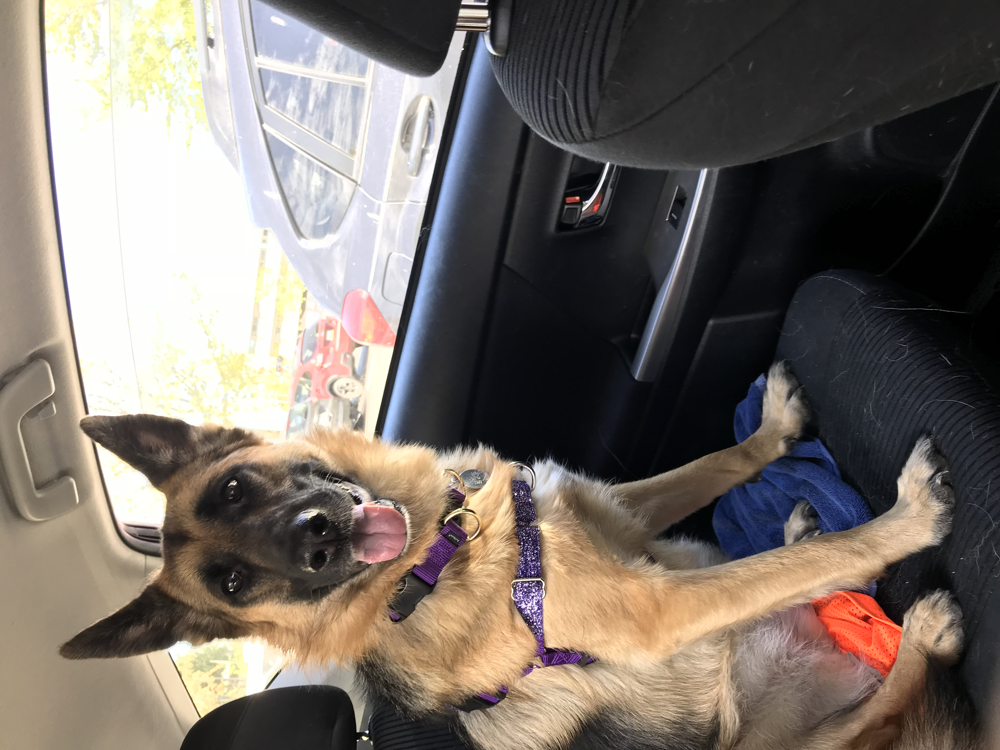

Photos



Hello there, friend! I'm Lila. I'm a German Shepherd and my birthday is November 1st, 2016. My mom and dad adopted me from a friend of theirs who needed to find me a new home. I'm very happy they did, because that's where I got to meet my best friend, and sister, Lucy! I love going for walks, carrides, and to the park. My favorite treats are apples with peanut butter, scrambled eggs, and whatever I can steal off the counter when no one's looking.